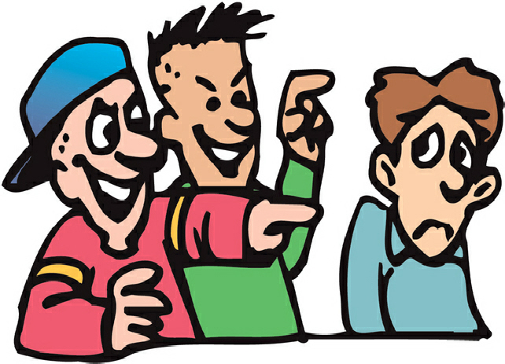
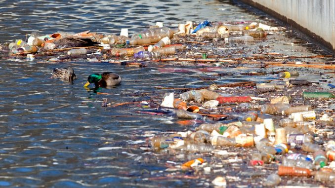

Make direct eye contact with the bully and use a calm but firm tone of voice to tell them to stop.
If joking comes easy, try humor to shift the energy of the moment.
Don't try to fight the bully. Instead, walk away if possible and find an adult to get help.
Tell parents or a trustworthy adult about the situation so they can help create a plan to stop it.
Bullies tend to pick on kids when they're alone, so try to stay near other children and adults.
Sit near the front of the school bus, or ride the bus with a friend from the neighborhood.

Problem 2
Water pollution
Water pollution is caused by many factors including (but certainly not limited to): uncontrolled construction sites,
leaking sewer lines, stormwater runoff, accidental spills and leaks, improper discharge of wastes, mining activities, foundries,
animal waste, and others. Options for water pollution solutions are equally diverse.
Freshwater is one of the most vital resources for all life on Earth. Much of the water we count on daily for cooking,
bathing, and other routine activities is supplied from rivers, lakes, and other surface water sources. However,
without widespread care and appropriate protection and treatment systems, our water sources are becoming more and more polluted.
As a result of needs that have exceeded funding, there is an ever increasing gap occurring between the amount of public funding available
and the measures truly needed for implementing the quantity of water pollution solutions.

Problem 3
Garbage in the streets
THIS PROBLEM IS VERY DANGEROUS SO YOU SHOULD KNOW HOW TO SOLVE THAT !
The first that comes to mind is recycling…. the more we can recycle, the less garbage there is.
Home gardeners can also compost a certain amount of garbage mixed with soil and leaves. That reduces garbage.
When I was a child, we had a burn barrel, and burned some of our garbage.
Other solution that have at least been tried (and I don’t see as particularly desireable solution) is dumping at sea.
problem 4
Being lonely
1. Connect through your sports, hobbies, passions or interests.
Meet like-minded people who share something that you also love. They will make time for you; other people already have full calendars.
2. Talk to talk to elder people.
They have plenty of wisdom, time, and advice that they can share. By listening, you are also validating them as well as yourself.
. Find out why you feel lonely.
Perhaps there is some bitterness, resentment, or guilt that you are carrying around. It is time to forgive yourself and others so that you have the best chance possible to connect with yourself and others.